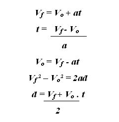

Es una ciencia fundamental que estudia y describe el comportamiento de los fenómenos naturales que ocurren en nuestro universo. Es una ciencia basada en observaciones experimentales y en mediciones. Su objetivo es desarrollar teorías físicas basadas en leyes fundamentales, que permitan describir el mayor número posible de fenómenos naturales con el menor número posible de leyes físicas. Estas leyes físicas se expresan en lenguaje matemático, por lo que para entender sin inconvenientes el tratamiento del formalismo teórico de los fenómenos físicos se debe tener una apropiada formación en matemáticas, en este curso basta un nivel básico de matemáticas.
La aceleración de un objeto es una magnitud que indica cómo cambia la velocidad del objeto en una unidad de tiempo. Como la velocidad es una magnitud vectorial (es decir, que posee una dirección), la aceleración también lo es. Normalmente se representa con el signo a y su unidad de medida en el Sistema Internacional es m/s2 (metros por segundo al cuadrado).
